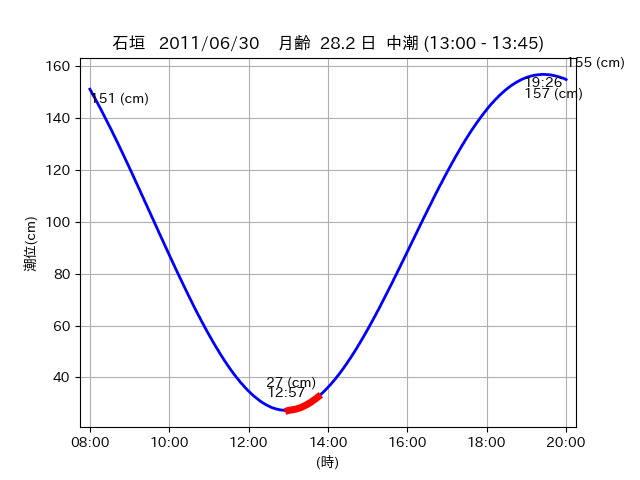
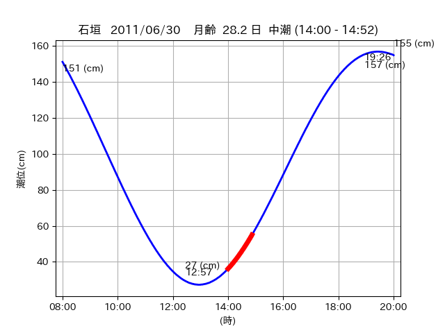

<!DOCTYPE html>
<html>
<head>
    
    <meta http-equiv="content-type" content="text/html; charset=UTF-8" />
    
        <script>
            L_NO_TOUCH = false;
            L_DISABLE_3D = false;
        </script>
    
    <style>html, body {width: 100%;height: 100%;margin: 0;padding: 0;}</style>
    <style>#map {position:absolute;top:0;bottom:0;right:0;left:0;}</style>
    <script src="https://cdn.jsdelivr.net/npm/leaflet@1.9.3/dist/leaflet.js"></script>
    <script src="https://code.jquery.com/jquery-3.7.1.min.js"></script>
    <script src="https://cdn.jsdelivr.net/npm/bootstrap@5.2.2/dist/js/bootstrap.bundle.min.js"></script>
    <script src="https://cdnjs.cloudflare.com/ajax/libs/Leaflet.awesome-markers/2.0.2/leaflet.awesome-markers.js"></script>
    <link rel="stylesheet" href="https://cdn.jsdelivr.net/npm/leaflet@1.9.3/dist/leaflet.css"/>
    <link rel="stylesheet" href="https://cdn.jsdelivr.net/npm/bootstrap@5.2.2/dist/css/bootstrap.min.css"/>
    <link rel="stylesheet" href="https://netdna.bootstrapcdn.com/bootstrap/3.0.0/css/bootstrap-glyphicons.css"/>
    <link rel="stylesheet" href="https://cdn.jsdelivr.net/npm/@fortawesome/fontawesome-free@6.2.0/css/all.min.css"/>
    <link rel="stylesheet" href="https://cdnjs.cloudflare.com/ajax/libs/Leaflet.awesome-markers/2.0.2/leaflet.awesome-markers.css"/>
    <link rel="stylesheet" href="https://cdn.jsdelivr.net/gh/python-visualization/folium/folium/templates/leaflet.awesome.rotate.min.css"/>
    
            <meta name="viewport" content="width=device-width,
                initial-scale=1.0, maximum-scale=1.0, user-scalable=no" />
            <style>
                #map_5a2c093d118f7231c5cde5d42caadeac {
                    position: relative;
                    width: 2048.0px;
                    height: 1600.0px;
                    left: 0.0%;
                    top: 0.0%;
                }
                .leaflet-container { font-size: 1rem; }
            </style>
        
</head>
<body>
    
    
            <div class="folium-map" id="map_5a2c093d118f7231c5cde5d42caadeac" ></div>
        
</body>
<script>
    
    
            var map_5a2c093d118f7231c5cde5d42caadeac = L.map(
                "map_5a2c093d118f7231c5cde5d42caadeac",
                {
                    center: [24.478, 124.291],
                    crs: L.CRS.EPSG3857,
                    ...{
  "zoom": 12,
  "zoomControl": true,
  "preferCanvas": false,
}

                }
            );

            

        
    
            var tile_layer_82cbd63a8c58aa2fcb671200a91ecc98 = L.tileLayer(
                "https://cyberjapandata.gsi.go.jp/xyz/seamlessphoto/{z}/{x}/{y}.jpg",
                {
  "minZoom": 0,
  "maxZoom": 18,
  "maxNativeZoom": 18,
  "noWrap": false,
  "attribution": "\u5730\u7406\u9662\u5730\u56f3",
  "subdomains": "abc",
  "detectRetina": false,
  "tms": false,
  "opacity": 1,
}

            );
        
    
            tile_layer_82cbd63a8c58aa2fcb671200a91ecc98.addTo(map_5a2c093d118f7231c5cde5d42caadeac);
        
    
            var marker_14026b3c2dd41f78c8a1d7035d55f530 = L.marker(
                [24.5579, 124.3359],
                {
}
            ).addTo(map_5a2c093d118f7231c5cde5d42caadeac);
        
    
            var icon_827995cc01023ebc06620438e5225283 = L.AwesomeMarkers.icon(
                {
  "markerColor": "orange",
  "iconColor": "white",
  "icon": "info-sign",
  "prefix": "glyphicon",
  "extraClasses": "fa-rotate-0",
}
            );
        
    
        var popup_59ea5b9212921477e4d457e947459bd3 = L.popup({
  "maxWidth": "100%",
});

        
            
                var html_c8298d4d50e1c37468096625e0cadab8 = $(`<div id="html_c8298d4d50e1c37468096625e0cadab8" style="width: 100.0%; height: 100.0%;"><table><tr><td></td></tr><tr><td><center>20110630 No.1 </center></table></td></tr></table</div>`)[0];
                popup_59ea5b9212921477e4d457e947459bd3.setContent(html_c8298d4d50e1c37468096625e0cadab8);
            
        

        marker_14026b3c2dd41f78c8a1d7035d55f530.bindPopup(popup_59ea5b9212921477e4d457e947459bd3)
        ;

        
    
    
                marker_14026b3c2dd41f78c8a1d7035d55f530.setIcon(icon_827995cc01023ebc06620438e5225283);
            
    
            var poly_line_d23c260ffbc7c0918f5b457883f0a077 = L.polyline(
                [[24.5579, 124.3359], [24.5598, 124.3393]],
                {"bubblingMouseEvents": true, "color": "#FF00FF", "dashArray": null, "dashOffset": null, "fill": false, "fillColor": "#FF00FF", "fillOpacity": 0.2, "fillRule": "evenodd", "lineCap": "round", "lineJoin": "round", "noClip": false, "opacity": 1.0, "smoothFactor": 1.0, "stroke": true, "weight": 3}
            ).addTo(map_5a2c093d118f7231c5cde5d42caadeac);
        
    
            var marker_d52c780bd0f473208af99901d4333cd4 = L.marker(
                [24.5589, 124.3398],
                {
}
            ).addTo(map_5a2c093d118f7231c5cde5d42caadeac);
        
    
            var icon_08a760229c2ba50d123777411e366248 = L.AwesomeMarkers.icon(
                {
  "markerColor": "orange",
  "iconColor": "white",
  "icon": "info-sign",
  "prefix": "glyphicon",
  "extraClasses": "fa-rotate-0",
}
            );
        
    
        var popup_e4cb86c1ad731992e89737d137a2ecf3 = L.popup({
  "maxWidth": "100%",
});

        
            
                var html_813dfe5ee96694dd778d28b516a7f857 = $(`<div id="html_813dfe5ee96694dd778d28b516a7f857" style="width: 100.0%; height: 100.0%;"><table><tr><td></td></tr><tr><td><center>20110630 No.2 </center></table></td></tr></table</div>`)[0];
                popup_e4cb86c1ad731992e89737d137a2ecf3.setContent(html_813dfe5ee96694dd778d28b516a7f857);
            
        

        marker_d52c780bd0f473208af99901d4333cd4.bindPopup(popup_e4cb86c1ad731992e89737d137a2ecf3)
        ;

        
    
    
                marker_d52c780bd0f473208af99901d4333cd4.setIcon(icon_08a760229c2ba50d123777411e366248);
            
    
            var poly_line_b17901571edfce2f7238498bbeb1a190 = L.polyline(
                [[24.5589, 124.3398], [24.5644, 124.3457]],
                {"bubblingMouseEvents": true, "color": "#FF00FF", "dashArray": null, "dashOffset": null, "fill": false, "fillColor": "#FF00FF", "fillOpacity": 0.2, "fillRule": "evenodd", "lineCap": "round", "lineJoin": "round", "noClip": false, "opacity": 1.0, "smoothFactor": 1.0, "stroke": true, "weight": 3}
            ).addTo(map_5a2c093d118f7231c5cde5d42caadeac);
        
    
            var marker_bb7467fa3b6fbaf0c7a1ef716fabccd8 = L.marker(
                [24.4778, 124.2886],
                {
}
            ).addTo(map_5a2c093d118f7231c5cde5d42caadeac);
        
    
            var icon_6f4f1ec8f0ce4bc999b2ec653a46100c = L.AwesomeMarkers.icon(
                {
  "markerColor": "orange",
  "iconColor": "white",
  "icon": "info-sign",
  "prefix": "glyphicon",
  "extraClasses": "fa-rotate-0",
}
            );
        
    
        var popup_fda7a99572b5e97171e7768fce70860e = L.popup({
  "maxWidth": "100%",
});

        
            
                var html_4a01ba33b3cee3faa82d806cd7cc822b = $(`<div id="html_4a01ba33b3cee3faa82d806cd7cc822b" style="width: 100.0%; height: 100.0%;"><table><tr><td></td></tr><tr><td><center>20110630 No.3 </center></table></td></tr></table</div>`)[0];
                popup_fda7a99572b5e97171e7768fce70860e.setContent(html_4a01ba33b3cee3faa82d806cd7cc822b);
            
        

        marker_bb7467fa3b6fbaf0c7a1ef716fabccd8.bindPopup(popup_fda7a99572b5e97171e7768fce70860e)
        ;

        
    
    
                marker_bb7467fa3b6fbaf0c7a1ef716fabccd8.setIcon(icon_6f4f1ec8f0ce4bc999b2ec653a46100c);
            
    
            var poly_line_2a167e0fa873a5a88ca7c9268e900d83 = L.polyline(
                [[24.4778, 124.2886], [24.4776, 124.294]],
                {"bubblingMouseEvents": true, "color": "#00FFFF", "dashArray": null, "dashOffset": null, "fill": false, "fillColor": "#00FFFF", "fillOpacity": 0.2, "fillRule": "evenodd", "lineCap": "round", "lineJoin": "round", "noClip": false, "opacity": 1.0, "smoothFactor": 1.0, "stroke": true, "weight": 3}
            ).addTo(map_5a2c093d118f7231c5cde5d42caadeac);
        
</script>
</html>